In China Employee Termination: Pulse Decision-Radar Brief for Foreign Employers (2026 Testing Run)
Key takeaways
- A decision-radar sweep helps foreign employers identify China termination risk before execution pressure peaks.
- Lead with legal route clarity, then rank operational risks by impact and immediacy.
- Route, evidence, communication, and settlement signals should be reviewed together, not in sequence silos.
- Payroll and IIT readiness should be treated as high-priority radar signals.
- Radar-based prioritization supports faster and cleaner executive decisions.
Pulse lead
Foreign employers often discover termination risk too late because reviews are checklist-linear while execution risk is simultaneous. A radar model solves this by showing which signals are high-intensity now, not just which step comes next.
This run uses a risk-signal sweep format for quick executive action: detect, prioritize, assign, and close.
Plain-language legal context first
China’s Labor Contract Law defines permitted termination routes. State Council implementation regulations and SPC judicial interpretation shape practical dispute review. For foreign teams, this means legal route validity is essential but insufficient unless process records, communications, and settlement outcomes remain coherent.
Decision-radar sweep (high to low intensity)
Signal A: Route coherence risk
What to check: one legal route narrative across HR, legal, manager, and written notice.
If high: immediate legal recalibration and communication hold.
Signal B: Evidence integrity risk
What to check: dated, objective, source-linked records with intact chronology.
If high: block execution and run evidence remediation plan.
Signal C: Communication drift risk
What to check: script-notice-meeting consistency, including bilingual control wording.
If high: reset manager briefing and reapprove package.
Signal D: Settlement certainty risk
What to check: severance/wage/leave/IIT model locked with approvals.
If high: stop employee-facing action until settlement lock is complete.
Signal E: Exception readiness risk
What to check: refusal protocol, override governance, and escalation ownership.
If high: enforce contingency pre-approval before proceeding.
Practical implications for foreign employers
- Radar ranking improves decision speed under pressure.
- HQ and local teams can align on one shared risk picture.
- Ownership becomes clearer when each signal has one accountable closer.
- City-specific weighting can be added without rewriting the full framework.
For cross-border leadership, this approach reduces meeting friction: teams focus on top two live risks and assigned closures instead of broad status narratives. It also creates better governance records, because each escalation is tied to a specific signal change and closure action.
Cross-border operating considerations
- Time-zone approvals: define delegated approvers when HQ is offline to avoid forced local shortcuts.
- Language control: designate one controlling legal-language draft and one approved operational translation.
- Vendor alignment: ensure payroll vendors receive route context, not just payout instruction lines.
- Manager consistency: require a short pre-meeting alignment check so regional and local narratives do not diverge.
Daily operations SOP
- Run pre-action radar sweep and score A-E signals.
- Assign closer and deadline to each non-green signal.
- Lock settlement and route signals before communication release.
- Re-sweep after any material new fact.
- Execute with radar log snapshots (pre/during/post).
- Close case with final sweep and archive review.
Required document checklist
- Route memo + legal signoff
- Evidence index + chronology check
- Communication package + language-control note
- Settlement worksheet + IIT method + version ID
- Exception matrix + override policy
- Radar score log and closure notes
- Service/payment proof
- Final closure audit
Exception handling playbook
- High-risk signal unresolved: hold execution.
- New facts increase signal intensity: re-sweep and reassign.
- Override request on unresolved high signal: written risk acceptance required.
- Settlement signal reopens late: suspend communication and relock model.
System implementation notes
Add radar fields to HRIS/payroll:
- signal score (A-E)
- owner and closure SLA
- intensity reason code
- settlement lock + IIT fields
- override trail
- final sweep completeness score
Minimum data model for reliable radar output
- Case header: entity, city, route type, risk tier, owner.
- Signal table: signal id, current score, prior score, changed-by, changed-at, reason.
- Action table: action id, owner, due date, status, closure evidence link.
- Override table: approver, rationale, risk accepted, expiry/review date.
- Closure table: final sweep snapshot, unresolved exceptions, archive confirmation.
Without this structure, radar dashboards can look complete while hiding unresolved control gaps.
Common mistakes and prevention
- Mistake: equal attention to all signals.
Prevention: prioritize high-intensity risks first.
- Mistake: settlement signal treated as late-stage admin.
Prevention: mandatory pre-communication lock.
- Mistake: no second sweep after new facts.
Prevention: auto-triggered re-sweep rule.
What to do now
- Pilot decision-radar sweeps on active medium/high-risk cases.
- Define intensity thresholds and escalation owners.
- Make settlement and route non-waivable high-priority signals.
- Add city-specific weighting factors.
- Train managers on communication drift triggers.
- Track unresolved high-signal age.
- Review weekly radar dashboards with leadership.
- Map disputes to prior radar misses.
- Update SOP and templates from findings.
- Re-run in each hourly quality cycle.
Radar KPI dashboard
Track: high-signal count at first sweep, average closure time for high signals, override rate on unresolved signals, and post-action incidents tied to missed high-intensity signals. Add one prevention KPI: reroute rate after first sweep.
For executive reporting, split metrics into two views:
- Weekly execution view: open high signals, SLA breaches, unresolved owners.
- Monthly governance view: repeat failure categories, city-level variance patterns, and override quality.
Rollout recommendation
- Week 1-2: run radar sweeps on medium-risk cases and calibrate scoring language.
- Week 3-4: include high-risk cases and enforce settlement/route as non-waivable high signals.
- Month 2+: integrate radar metrics into leadership risk reviews and local counsel recalibration.
Phased rollout improves consistency and avoids noisy scoring in early adoption.
What to watch next
- Continued focus on route/process coherence.
- Persistent settlement and IIT transparency risk.
- Ongoing city-level variance in forum expectations.
FAQ
Is radar scoring legally required?
No. It is a governance model for better execution decisions.
Can small teams run this?
Yes, with simplified scoring and clear ownership.
When should external PRC counsel be mandatory?
High-risk unilateral, restructuring, refusal, protected-status, and multi-city complex cases.
Legal depth appendix
Anchors: PRC Labor Contract Law, State Council implementation regulations, SPC labor-dispute interpretation. Practical rule: route legality, procedural fairness, and documentary reliability must align through settlement completion.
Disclaimer
Informational only, not legal advice. Seek qualified PRC counsel for case-specific actions.
Sources
- NPC Labor Contract Law (English): http://www.npc.gov.cn/zgrdw/englishnpc/Law/2007-12/13/content_1384064.htm
- State Council Implementation Regulations: https://www.gov.cn/gongbao/content/2008/content_1124615.htm
- SPC labor dispute interpretation: https://www.court.gov.cn/fabu/xiangqing/243981.html
- China Briefing termination guide: https://www.china-briefing.com/news/employee-termination-in-china/
- Littler employment-law update: https://www.littler.com/news-analysis/asap/key-recent-developments-chinas-employment-law-china-us-comparative-perspective
- PwC PRC IIT summary: https://taxsummaries.pwc.com/peoples-republic-of-china/individual/taxes-on-personal-income
Need local employment support in China?
If you need a compliance-first partner for hiring, payroll, and risk controls in China, China-Payroll.com can help evaluate the right setup.
Image Prompt Pack
Create a 16:9 hero image for article title: 'In China Employee Termination: Pulse Decision-Radar Brief for Foreign Employers (2026 Testing Run)'. Scene: global operations team evaluating workforce model options for China market entry. Include motifs: decision …